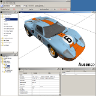
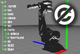
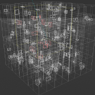

| Applications (Content, Simulations, CAD, Scientific, ..) |
CCTs
C3D Interactive
is a leading BIM-based construction project control application.
The solution helps Construction Managers, owners and contractors to visualize and
control their projects, by analyzing key construction information, based on
actual progress as well as do visual “look-ahead” based on current progress rates, etc.
C3D allows users to link 3D objects to multifaceted data in an object oriented fashion.
Data is modeled in classes and hierarchies.
C3D is a CAD-neutral vendor platform and can read from several leading
authoring tools, supporting a multitude of industry standards.
C3D Mobile is available free on Google Play.
|
 Processing is an open
source programming language and environment for people who want to
program images, animation, and sound. It is used by students, artists,
designers, architects, researchers, and hobbyists for learning,
prototyping, and production. Processing is developed by artists and
designers as an alternative to proprietary software tools in the same
domain. It uses JOGL for its hardware accelerated 3D rendering
support.
Processing is an open
source programming language and environment for people who want to
program images, animation, and sound. It is used by students, artists,
designers, architects, researchers, and hobbyists for learning,
prototyping, and production. Processing is developed by artists and
designers as an alternative to proprietary software tools in the same
domain. It uses JOGL for its hardware accelerated 3D rendering
support.
|
 NASA World Wind Java
provides a suite of open-source
3-D virtual globe technologies
for Java applications, which can be utilized in user applications.
Version 2.0 now uses JOGL 2.
It provides a rich set of features for displaying and interacting with geographic data and representing
a wide range of geometric objects.
Online demos are available,
as well as an F-16 Flight Simulator
from Disti. NASA World Wind Java
provides a suite of open-source
3-D virtual globe technologies
for Java applications, which can be utilized in user applications.
Version 2.0 now uses JOGL 2.
It provides a rich set of features for displaying and interacting with geographic data and representing
a wide range of geometric objects.
Online demos are available,
as well as an F-16 Flight Simulator
from Disti.
|
 FROG
is a fast OpenGL event display tool mainly developed for visualization of data
in the field of high energy physics. FROG is mostly used to visualized/animate data
from proton/proton collision produced in the CMS experiment at the LHC, CERN, Switzerland.
Animations produced by this tools are frequently used to share the progress of the
CMS experiment with the media of the world
(animations are often visible on scientific website or even on TV).
FROG has recently been ported to Java and is now using JOGL
and also offers an
online demonstration. FROG
is a fast OpenGL event display tool mainly developed for visualization of data
in the field of high energy physics. FROG is mostly used to visualized/animate data
from proton/proton collision produced in the CMS experiment at the LHC, CERN, Switzerland.
Animations produced by this tools are frequently used to share the progress of the
CMS experiment with the media of the world
(animations are often visible on scientific website or even on TV).
FROG has recently been ported to Java and is now using JOGL
and also offers an
online demonstration.
|
 Scilab is a free scientific software
package for numerical computations providing a powerful open computing
environment for engineering and scientific applications. It has
sophisticated data structures, an interpreter and a high level
programming language. It also integrates a 2-D and 3-D plotting module
designed to visually represent and understand complex data. Fully
integrated within the Scilab's Swing UI, the plotting module is based
on JOGL, allowing it to take advantage of the OpenGL accelerated
graphics.
Scilab is a free scientific software
package for numerical computations providing a powerful open computing
environment for engineering and scientific applications. It has
sophisticated data structures, an interpreter and a high level
programming language. It also integrates a 2-D and 3-D plotting module
designed to visually represent and understand complex data. Fully
integrated within the Scilab's Swing UI, the plotting module is based
on JOGL, allowing it to take advantage of the OpenGL accelerated
graphics.
|
 jReality
is a Java based, open-source, full-featured 3D scene graph package designed for 3D visualization and specialized in mathematical visualization.
It provides several backends, including a JOGL one for Java based OpenGL rendering. JReality is thread-safe,
has a flexible shading model based on an attribute-inheritance mechanism in the scene graph, device-independent user interaction and support
for 3D audio (JACK). It has a plugin system for assembling custom viewers,
an active forum and a growing set of
tutorial examples
to help developers interested in using jReality to solve their Java 3D problems.
For further information please look here. jReality
is a Java based, open-source, full-featured 3D scene graph package designed for 3D visualization and specialized in mathematical visualization.
It provides several backends, including a JOGL one for Java based OpenGL rendering. JReality is thread-safe,
has a flexible shading model based on an attribute-inheritance mechanism in the scene graph, device-independent user interaction and support
for 3D audio (JACK). It has a plugin system for assembling custom viewers,
an active forum and a growing set of
tutorial examples
to help developers interested in using jReality to solve their Java 3D problems.
For further information please look here.
|
 BioJava
is an open-source project dedicated to providing a Java framework for processing biological data. It provides analytical and statistical routines, parsers for common file formats and allows the manipulation of sequences and 3D structures.
The RCSB Viewers suite of frameworks provides the capability of creating 3-d viewing applications. The libraries are Java based, and use JOGL for 3d rendering.
Some visualization tools are RCSB Protein Data Bank (Example) and
Epitode Database
(Windows only).
BioJava
is an open-source project dedicated to providing a Java framework for processing biological data. It provides analytical and statistical routines, parsers for common file formats and allows the manipulation of sequences and 3D structures.
The RCSB Viewers suite of frameworks provides the capability of creating 3-d viewing applications. The libraries are Java based, and use JOGL for 3d rendering.
Some visualization tools are RCSB Protein Data Bank (Example) and
Epitode Database
(Windows only).
|
 GeoGebra
is free and multi-platform dynamic mathematics software for all levels of education that joins geometry, algebra,
tables, graphing, statistics and calculus in one easy-to-use package.
It has received several educational software awards in Europe and the USA.
GeoGebra 5.0 has experimental 3D support utilizing JOGL.
Misc resources: Developer Wiki, SVN Repository. GeoGebra
is free and multi-platform dynamic mathematics software for all levels of education that joins geometry, algebra,
tables, graphing, statistics and calculus in one easy-to-use package.
It has received several educational software awards in Europe and the USA.
GeoGebra 5.0 has experimental 3D support utilizing JOGL.
Misc resources: Developer Wiki, SVN Repository.
|
|
Gephi is a tool for people that have to explore and understand graphs. Like Photoshop but for data,
the user interacts with the representation, manipulate the structures, shapes and colors to reveal hidden properties.
The goal is to help data analysts to make hypothesis, intuitively discover patterns, isolate structure singularities or
faults during data sourcing. It is a complementary tool to traditional statistics,
as visual thinking with interactive interfaces is now recognized to facilitate reasoning.
This is a software for Exploratory Data Analysis, a paradigm appeared in the Visual Analytics field of research.
|
JaamSim
is a discrete-event simulation environment developed by Ausenco as
the foundation of all our simulation applications. It includes
interactive 3d graphics, drag and drop model building, collada model
import and is fully open source (GPLv3).
|
|
Volume Viewer
is an open source renderer for 3D volumetric data. It provides tools for coloring your model,
cutting away pieces, and viewing it from any angle. It can cast shadows within the model for extra realism.
You can even upload your own volumetric data and view it in real time.
|
Jzy3d
stands for Java Easy 3d, and allows a rapid display of 3d scientific
data. User can define z=f(x,y) functions binded to (customizable)
colormaps, as well as rendering predefined simple 3d shapes
programmaticaly or from csv files.
One can moreover add pre/post renderers for adding java2d layers
to the 3d scene. Jzy3d provides a simple bridge to AWT, SWT, or
Swing, and has already been integrated in Eclipse RCP
and Swing applications. The API releases one of the burden
of working with OpenGL,
3d polygon ordering and transparency management.
|
 OneStone® Pebbles are a new series of calculus visualization tools developed
by Bright Ideas Software®.
Each 'Pebble' in the series is a stand-alone
program designed to illustrate a specific topic in the calculus
syllabus. While the topic of each Pebble is different, the experience
of using each remains as constant as possible, and features several
elements identified as contributing to the development of a deeper
understanding of dynamic covariant relationships. The Pebbles use JOGL
for their interactive 3D rendering. Try the
Curve Families and
Surfaces of Revolution examples!
OneStone® Pebbles are a new series of calculus visualization tools developed
by Bright Ideas Software®.
Each 'Pebble' in the series is a stand-alone
program designed to illustrate a specific topic in the calculus
syllabus. While the topic of each Pebble is different, the experience
of using each remains as constant as possible, and features several
elements identified as contributing to the development of a deeper
understanding of dynamic covariant relationships. The Pebbles use JOGL
for their interactive 3D rendering. Try the
Curve Families and
Surfaces of Revolution examples!
|
Impact is a
complete finite element suite including preprocessor, solver and
postprocessor which is useable for simulating dynamic events such as
car crashes or stamping of metal sheets. The suite allows 3D
modelling, solving and viewing of simulation results, all in OpenGL
accelerated graphics through the use of JOGL.
|
|
Insparia was created to help people
easily visualize, construct and track information about a 3d
environment online. Shape and texture importing as well as a robust
renderer will be available in the final commercial version. Insparia
uses JOGL to allow the user to construct and interact with their 3d
environment in real-time. Please note that Insparia is in alpha
testing. Feedback is appreciated.
|
|
|
| Utilities, Libraries, Building blocks |
 jMonkeyEngine
is a game engine made for developers who want to create 3D games following modern technology standards.
The framework is programmed entirely in Java aimed at wide accessibility and quick deployment to desktop, web, and mobile platforms. jMonkeyEngine
is a game engine made for developers who want to create 3D games following modern technology standards.
The framework is programmed entirely in Java aimed at wide accessibility and quick deployment to desktop, web, and mobile platforms.
Currently Julien Gouesse
develops a JOGL backend for jME3
with support of the jME team. NEWT support is also underway, which will allow jME3 to run on mobile devices as long
proper JOGL/OpenGL
profile separation is being used.
|
 Ardor3D
is a professionally oriented, open source, Java based 3D engine brought to you by Ardor Labs. Ardor3D
is a professionally oriented, open source, Java based 3D engine brought to you by Ardor Labs.
Julien Gouesse started the new JOGL backend development,
which is now merged into the official trunk.
|
 Java3D
is back.
It is maintained by Harvey Harrison and initially ported to
our current JOGL version by Julien Gouesse. Java3D
is back.
It is maintained by Harvey Harrison and initially ported to
our current JOGL version by Julien Gouesse.
Source available via this git repository
and JAR files can be downloaded here.
Our forum may help you with your questions.
|
libGDX
provides a cross-platform API for game and real-time application development. It's powerful abstractions let you chose how you want to write your game or application, w/o a one size fit all approach. The JOGL backend, a team effort of the JogAmp community, allows libGDX applications to be deployed on desktop and mobile platforms. Source code for this backend is currently available here.
LibGDX is released under the Apache 2.0 license.
|
|

Unlicense is a general purpose public domain (PD) framework created in 2012. The project
is self contained and does not use any API from the java virtual machine,
providing PD code for character encoding, compression, protocols and image decoders.
This qualifies it as a solution for cross-vm applications like JVM and Android.
As for rendering this library offer numerous 3D format readers, a custom UI api,
and a 3D engine build ontop of JOGL and JOAL.
|
J4K is an an open source Java library that implements a Java binding for the Microsoft's Kinect SDK. It provides access to the video, depth, and skeleton streams of the Kinect using the Java Native Interface (JNI).
Furthermore, utilities are provided to convert the packed depth frames, skeleton frames, and video frames received by a Kinect sensor into easy-to-use Java objects, as well as methods to save the data in open file formats such as VRML.
JOGL may be used to visualize the kinect data as 3D textured surfaces in OpenGL (Demo Video).
|
 Nifty GUI is a Java Library that supports the building of interactive user interfaces for games or similar applications.
The configuration of the GUI is stored in xml files with little supporting Java code.
In short Nifty helps you to layout stuff, display it in a cool way and interact with it :)
Nifty GUI is a Java Library that supports the building of interactive user interfaces for games or similar applications.
The configuration of the GUI is stored in xml files with little supporting Java code.
In short Nifty helps you to layout stuff, display it in a cool way and interact with it :)
Source code is available in this git repository.
JOGL is one renderer backend besides others.
|
 GLG2D is a Graphics2D implementation that uses OpenGL to implement basic Java2D drawing functionality.
We currently use the fixed function pipeline, with the GL2 profile for most functionality.
But a shader implementation is in the pipeline (so to speak).
See implementation status
for which features are fully implemented.
GLG2D is a Graphics2D implementation that uses OpenGL to implement basic Java2D drawing functionality.
We currently use the fixed function pipeline, with the GL2 profile for most functionality.
But a shader implementation is in the pipeline (so to speak).
See implementation status
for which features are fully implemented.
|
|
jspatial
implements a set of spatial data structures. It
features Quadtree and Octtree implementations, including efficient area
and raycast queries. It has numerous working examples and full
documentation including tutorials and JavaDoc. It includes a test suite
with 97% automated unit test coverage. It is platform and
rendering-system independent, but uses JOGL for the included example
Octtree viewer. The code is under the extremely liberal ISC
(BSD-like) license.
|
 dyn4j
is a 100% Java 2D collision detection and physics engine. Designed to be fast, stable, extensible, and easy to use.
dyn4j is free for use in commercial and non-commercial applications and licensed under the New BSD License.
The project comprises hundreds of JUnit test cases, Sandbox: a GUI test application, two example applications (ExampleGraphics2D and ExampleJOGL),
Javadocs, wiki, forum, and more! dyn4j
is a 100% Java 2D collision detection and physics engine. Designed to be fast, stable, extensible, and easy to use.
dyn4j is free for use in commercial and non-commercial applications and licensed under the New BSD License.
The project comprises hundreds of JUnit test cases, Sandbox: a GUI test application, two example applications (ExampleGraphics2D and ExampleJOGL),
Javadocs, wiki, forum, and more!
|
 GL Studio is an object oriented rapid application
development tool that allows a user to graphically combine
photographs, 3D models and behavior logic to create advanced 2D and 3D
human machine interfaces. GL Studio generates Java or C++ source code
which can then be integrated into the user’s application as a user
interface.
Java code using JOGL can be exported.
An F-16 Flight Simulator using NASA World Wind is demonstrated.
GL Studio is an object oriented rapid application
development tool that allows a user to graphically combine
photographs, 3D models and behavior logic to create advanced 2D and 3D
human machine interfaces. GL Studio generates Java or C++ source code
which can then be integrated into the user’s application as a user
interface.
Java code using JOGL can be exported.
An F-16 Flight Simulator using NASA World Wind is demonstrated.
|
MyHMI
is a Java based object oriented software framework for industrial graphical user interfaces development.
It enables creation of visually adjustable interfaces for embedded systems, independently of underlying OS
or hardware platform, communication or data processing mechanisms.
An expressive and comprehensive 3D visualization MyHMI provides, is based on
a low level OpenGL and OpenGL ES standards and a higher interlayer
based on JOGL enabling multiplatform compatibility.
|
 JebGL
is a piece of Javascript which lets you run your WebGL apps in browsers lacking WebGL support without having to modify your existing code!
Behind the scenes JebGL uses a fallback Java applet to emulate the WebGL canvas if needed, and the Java applet runs hardware accelerated
on all platforms using JOGL.
JebGL is released under the MIT license. JebGL
is a piece of Javascript which lets you run your WebGL apps in browsers lacking WebGL support without having to modify your existing code!
Behind the scenes JebGL uses a fallback Java applet to emulate the WebGL canvas if needed, and the Java applet runs hardware accelerated
on all platforms using JOGL.
JebGL is released under the MIT license.
|
|
| Games |
|
Ticket to Ride
and Memoir '44 are boardgames published by
Days of Wonder.
They also make digital versions of these games since 2006. These are available on all desktops computers (Windows, MacOS and Linux),
thanks to the use of Java and JOGL.
This has proven to be the best solution to create the same gaming experience on all desktop computers with a single code base.
The games are available on Steam. Days of Wonder is currently porting their engine to JOGL2, allowing the inclusion of Android devices.
|
 Everplanes is a game of exploration, building, survival and strategy.
It introduces new gameplay, resources and challenges in the updates.
Each time the game is started, it automatically downloads the latest updates.
The game includes a built-in server for LAN or Internet play.
You can run an open server, or configure various levels of access control.
Everplanes features a built-in server browser and also includes global chat facility.
Everplanes is available for Mac OS X 10.4+, Windows XP/Vista/7 and Linux.
Everplanes is a game of exploration, building, survival and strategy.
It introduces new gameplay, resources and challenges in the updates.
Each time the game is started, it automatically downloads the latest updates.
The game includes a built-in server for LAN or Internet play.
You can run an open server, or configure various levels of access control.
Everplanes features a built-in server browser and also includes global chat facility.
Everplanes is available for Mac OS X 10.4+, Windows XP/Vista/7 and Linux.
|
 The Elflight Engine is a games engine designed for the web.
It supports hardware accelerated 3D games and applications in a web browser,
with the ability to import assets from major 3D packages such as Maya and 3D Studio.
The focus of the engine's architecture is minimal startup time, fast streaming, local
caching and collaborative real-time editing. The Elflight Engine is multi-user and so
lends itself to the development of virtual worlds and MMOs.
The Elflight Engine is a games engine designed for the web.
It supports hardware accelerated 3D games and applications in a web browser,
with the ability to import assets from major 3D packages such as Maya and 3D Studio.
The focus of the engine's architecture is minimal startup time, fast streaming, local
caching and collaborative real-time editing. The Elflight Engine is multi-user and so
lends itself to the development of virtual worlds and MMOs.
|
Jake2 is a port
of id Software's GPL'd Quake II engine from C to Java done by bytonic software.
Jake2 has been ported to the current JOGL version for desktop OpenGL and mobile OpenGL ES1 and ES2 use
including dropping AWT in favor of NEWT.
You can run the game online as an
NApplet
or via Webstart
on all of JOGL's supported platforms.
You can find the current source code in this
git repository.
|
|
| Older projects ... |
 chronotext is a series
of visual design experiments involving animated text and 3D objects
and surfaces. Several examples can be run on-line via Java Web
Start. See the latest
experiments of mapping text on to real 3D surfaces.
chronotext is a series
of visual design experiments involving animated text and 3D objects
and surfaces. Several examples can be run on-line via Java Web
Start. See the latest
experiments of mapping text on to real 3D surfaces.
|
 With STRAP you can align your proteins by
sequence and 3D-structure. STRAP simultaneously displays
3d-structures, amino acid sequence alignment and nucleotide sequences.
It has powerful annotation features.
With STRAP you can align your proteins by
sequence and 3D-structure. STRAP simultaneously displays
3d-structures, amino acid sequence alignment and nucleotide sequences.
It has powerful annotation features.
|
 Art of Illusion is a free, open source 3D modelling and rendering
studio. Many of its capabilities rival those found in commercial
programs. Some of the highlights include subdivision surface based
modelling tools, skeleton based animation, and a graphical language
for designing procedural textures and materials. It uses JOGL for
real-time OpenGL rendering in its modeling views.
Art of Illusion is a free, open source 3D modelling and rendering
studio. Many of its capabilities rival those found in commercial
programs. Some of the highlights include subdivision surface based
modelling tools, skeleton based animation, and a graphical language
for designing procedural textures and materials. It uses JOGL for
real-time OpenGL rendering in its modeling views.
|
Vehicle Dynamics Engine Demo
is a Java Web Start demonstration of a 3D physics engine developed by
Insight Machines. The
engine is designed especially for car games. The demo uses JOGL and
employs such techniques like shadow casting using the stencil buffer.
|
|
Sculpteo offers a 3D printing service, fast and available for everyone.
Starting from a 3D design, Sculpteo makes a specific object : interior decoration, characters, robots, miniatures, models, mechanic objects...
|
 FengGUI is a graphical
user interface (GUI) application programming interface (API) based on
OpenGL. FengGUI provides all typical GUI components like buttons,
sliders, trees, text areas, frames, tabs, etc. which are required to
build a complete GUI system. Since it is based on OpenGL, FengGUI fits
well in multimedia and game environments.
FengGUI is a graphical
user interface (GUI) application programming interface (API) based on
OpenGL. FengGUI provides all typical GUI components like buttons,
sliders, trees, text areas, frames, tabs, etc. which are required to
build a complete GUI system. Since it is based on OpenGL, FengGUI fits
well in multimedia and game environments.
|
|
The Fusion Framework enables Swing
components to be extended with 3D content via JOGL.
In general the 3D content will show up in layers on top of the corresponding Swing
component. The system provides a simple scenegraph, Swing-like mouse interaction, and low-level
animation support, as well as GLSL shaders and .obj file loading. The
demo page contains several Java Web Start applications.
|
|
| Discontinued projects |


{kind=link}